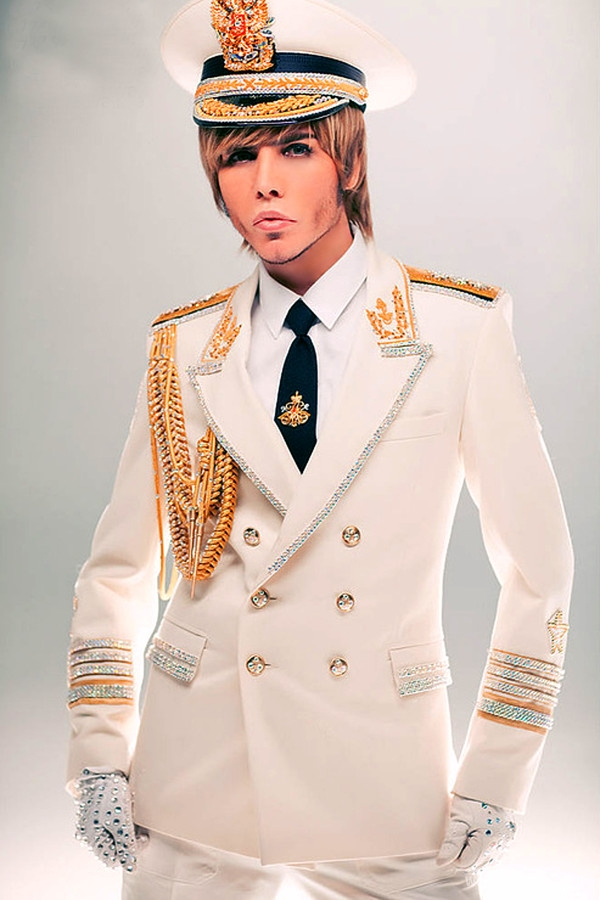

Коммунистический закрыс
Особое внимание нужно уделить “прожиточному минимуму” когда коммунистическая шваль высказывает свои национал социалистические права и что для мАсквы это не деньги, а для чурок деньги.
мАсква - кучка трусливых чмошников, крыс. мАсква - это вообще самый грязный матерок. Быть мАсквичом - значит быть крысой. Все крысы стекались в поганую мАскву чтобы образовать самое крупное сборище, а потом говорить что мАсквичи завоевали всю Россию. Нет это очередная ложь. Как все шло дело: мАсквичи приползли на коленях и начинали умолять. Как сейчас происходят дела, точно так же как всю историю мАсква никогда ничего не выигрывала, мАсква это лживое чмошинство.
мАсквичи - это трусы.
Если учесть мАсквоский закон о прожиточном минимуме. Сразу становится ясно что это деньги только для мАсквичей. Потому что любой мАсквич это животное, которому не нужна еда, не нужно ничего. мАсквичи полный разворот эволюции. мАсквичи живут за счет других, а сами животные. Это только нормально для мАсквичей ложью и обманом выкачивать все природные ресурсы, а говорить что это для общего блага. Но люди умирают с голоду, нет ни какого образования, медицины нет. Все вернулось в каменный век. И крысы мАсквичи которые просто звери хуже животных. Говорят о том что все хорошо. Но нет просто мАсквичи лживые крысы!
В настоящем цивилизованном мире. Необходимо подать в международный суд и судить мАсквичей как военных преступников оставшихся после нацистской Германии. + Судить за законы которые крысы мАсквичи придумали чтобы ограничивать людей, отнимая у них нормальную жизнь законом о прожиточном минимуме. Чтобы разобрать весь Великий мАсковский закрыс! Как крысятся мАсквичи.
Вот что осталось после войны с Украиной
Стал известен всему миру мАсковский чмош, как крысятся крысы. В своём мАсковском бункере с селезняком инопланетянином. Которому кстати вломили уже во всех 26 измерениях. Никто не принял слезника крысу кроме поганой мАсквы. Они узнали друг друга. И даже поделились крысиным усиком.
Истина ясна!
герб мАсквы это “двуглавый орел” - Но в реальной природе орла с двумя головами не бывает. Это больше …. , но не орел. Нету орлов с двумя головами. Если отбросить все доводы что мАсквичи - это чмыри, крысы и чмошники. И интерпретировать “двуглавого орла” по физиологическим причинам как персонажа для выживания. То можно заметить у настоящего орла “как у хищника” глаза направлены вперед, в одну точку. Орлы охотники и они охотяться, смотрят в прямо, чтобы напасть. И “двуглавый орел” с глазами как у курицы, в разные стороны, оттачивающий оборону, уже давно скрывающимся в бункере. Да, в бункере, на страшной измене, на гусе или даже на этом самом должно быть летающем чуде с двумя головами. Глаза которого направлены на четыре стороны, под углом 45 градусов. Как и маневр для полета.
По физиологическим причинам - это не такой орел, которым можно было бы гордиться. Но он есть. Его видят другие персонажи, его обсуждают другие … . В таких обсуждениях не ясно одно. Как это могли допустить. Все Вы уважаемые персонажи, когда мАсквичи поганые крысы высасывают твою нефть, жгут газ, рубят лес, транжирят все до последней капли. Под гербом с двуглавой “птицы”.
Выступления в фуражке с “двуглавой птицей”.
Каков он из себя мАсковский солдат? С грозной фуражкой оттачивают оборону, только бы не пленили такого “высоко культурного” боевика. Чарами, колдовскими. Коммунистическая тюрьма штампует таких борцов пачками, чмошными пачками голодранцев, чмошников. Говорить насколько все они чмошники можно бесконечно, настолько же, насколько глубока коммунизменность. Бездонная пропасть коммунистическая национал социальность. Чтобы потом сказать: “победа”. А что это за победа можно посмотреть по фотографии где сталин гоняет соски с гитлером.